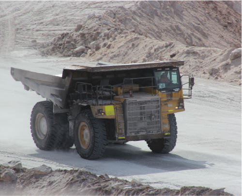

Curso de Operador de Camión de Extracción (CAEX) en Iquique: ¡Certificación Minera con Anupro360!
Este curso intensivo de Anupro360 está diseñado para formar **operadores de camiones de extracción (CAEX) en Iquique**, preparándolos para operar de manera segura y eficiente estos vehículos de alto tonelaje, esenciales en la **minería a cielo abierto de la región de Tarapacá**. Obtén una certificación con respaldo nacional y las habilidades que la industria necesita.
Contenido Detallado del Curso: ¿Qué aprenderás?
- **Fundamentos de Operación Segura y Eficiente de CAEX:** Incluye principios de la mecánica del camión, sistemas de control, y técnicas de conducción defensiva adaptadas al entorno minero.
- **Procedimientos de Carga, Acarreo y Descarga de Material:** Técnicas avanzadas para maximizar la productividad y minimizar riesgos en cada etapa del ciclo de extracción.
- **Normativas de Seguridad Minera y Medio Ambiente:** Cumplimiento de leyes y regulaciones chilenas e internacionales para garantizar un entorno de trabajo seguro y sostenible.
- **Mantenimiento Básico del Equipo:** Identificación de fallas comunes, inspecciones pre-operacionales y post-operacionales, y cuidado general del CAEX para prolongar su vida útil.
- **Factores de Productividad y Eficiencia:** Análisis de rendimiento, optimización de rutas, gestión del combustible y técnicas para mejorar la rentabilidad de las operaciones.
Modalidades de Estudio Flexibles en Iquique y Online
Todos nuestros cursos tienen una duración de 2 meses, con un esquema de pagos conveniente dividido en dos cuotas: la primera al inscribirse y la segunda al finalizar el primer mes. Las clases inician 5 días hábiles después de confirmada la inscripción y el pago de la primera cuota, permitiéndote una incorporación rápida.
Modalidad Mixta (Microsoft Teams + Aula Virtual) - Recomendada para Iquique
Experimenta un aprendizaje dinámico con clases en vivo impartidas por nuestros docentes expertos a través de **Microsoft Teams**, 2 días a la semana (a elección del alumno, de lunes a viernes). Esta modalidad combina la interacción en tiempo real con la flexibilidad de actividades de estudio y evaluaciones asincrónicas realizadas en nuestra moderna plataforma de aula virtual. Ideal para quienes buscan un equilibrio entre acompañamiento directo y estudio autónomo.
Oferta Especial para Iquique y seguidores de TikTok: ¡Inscríbete dentro de los próximos 3 días y, si eres seguidor de Anupro360 en TikTok, obtén un **50% de descuento!** El curso te quedaría en un valor aproximado de **USD $540**. ¡No pierdas esta oportunidad única!
Modalidad 100% Aula Virtual - Estudia a tu Ritmo desde Cualquier Lugar
Accede a todos los materiales de estudio, videos, lecturas y realiza las evaluaciones a tu propio ritmo, desde cualquier dispositivo. Mantén contacto con el docente a través de nuestra plataforma virtual para resolver dudas y recibir retroalimentación. Esta modalidad te ofrece **flexibilidad total** para adaptar el estudio a tu horario, sin compromisos de asistencia a clases fijas.
Descuento Especial para Inscripciones Rápidas: ¡Aprovecha un **50% de descuento** si te inscribes dentro de los próximos 3 días y eres seguidor en TikTok! El curso en esta modalidad te quedaría en un valor aproximado de **USD $429**. ¡Capacítate al mejor precio!
Preguntas Frecuentes sobre el Curso Operador CAEX
¿Este curso está reconocido por la industria minera en Chile?
Sí, nuestros certificados cumplen con los estándares del Marco de Cualificaciones del Consejo Minero de Chile, lo que garantiza su validez y reconocimiento a nivel nacional. Además, incorporan mecanismos de verificación de autenticidad.
¿Necesito experiencia previa para tomar el curso de CAEX?
No, el curso está diseñado para personas sin experiencia previa en operación de equipos pesados. Comenzamos desde los fundamentos, asegurando que adquieras todas las habilidades necesarias paso a paso.
¿El curso incluye práctica en simuladores o equipos reales?
La capacitación se enfoca en el conocimiento teórico y práctico a través de nuestra aula virtual y sesiones en Teams. Para práctica con equipos reales, esto debe coordinarse directamente con empresas o centros de entrenamiento específicos, lo cual no está incluido en este curso base. Sin embargo, nuestros conocimientos te preparan para esa etapa.
¿Cómo puedo acceder al descuento del 50%?
Para acceder al descuento del 50%, debes inscribirte dentro de los 3 días siguientes a tu consulta y seguir nuestras redes sociales en TikTok. Una vez verificados estos requisitos, se aplicará la reducción en el costo del curso.
¿Puedo pagar el curso en cuotas?
Sí, el valor del curso se divide en dos cuotas iguales. La primera se abona al momento de la inscripción, y la segunda al finalizar el primer mes de capacitación.